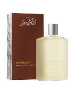
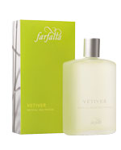
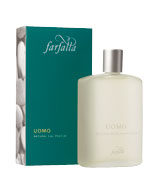

Alchemist
Natural After Shave Splash 
A profound and mysterious scent for men, full of charisma; mellow yet distinctively masculine with a spicy touch. With the green freshness of lemon, middle notes of labdanum and frankincense, as well as jasmine and tolu balm, and a hint of tobacco as a striking finish. |
Sandalwood
Natural After Shave Balm 
with a warm note of exotic woods. Discreet and yet very masculine, a perfume that brings to mind exotic woods. With precious sandalwood from the East Indies, nestling in a bed of cedar, iris and patchouli. Sandalwood balm soothes and cares for the skin after each shave. With aloe vera, witch hazel and camomile extracts as well as natural essential oils.
|
Vetiver
Natural Eau Fraîche
A wonderful combination of freshness and warm, male sensuality. Precious vetiver oil is extracted from the roots of an Asian sweet-grass. It reflects the warmth and vitality of the Earth like no other scent. Artfully combined with fresh scents.
|
Uomo
Natural Eau Fraîche
A unique scent for men that gets under the skin. Expressive and full of life. For adventurers and nightowls, bon vivants and charmers. With the freshness of grasses and ripe citrus fruits, a touch of mint, and sensuous base notes. For (un)shaven men with style. |